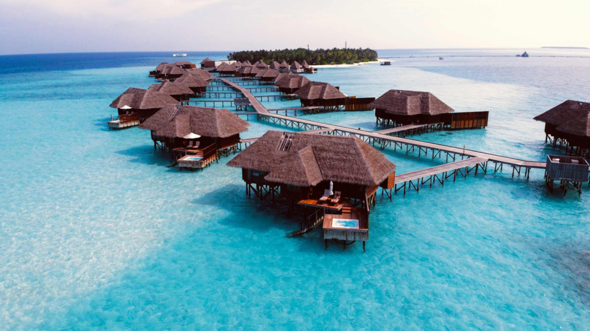
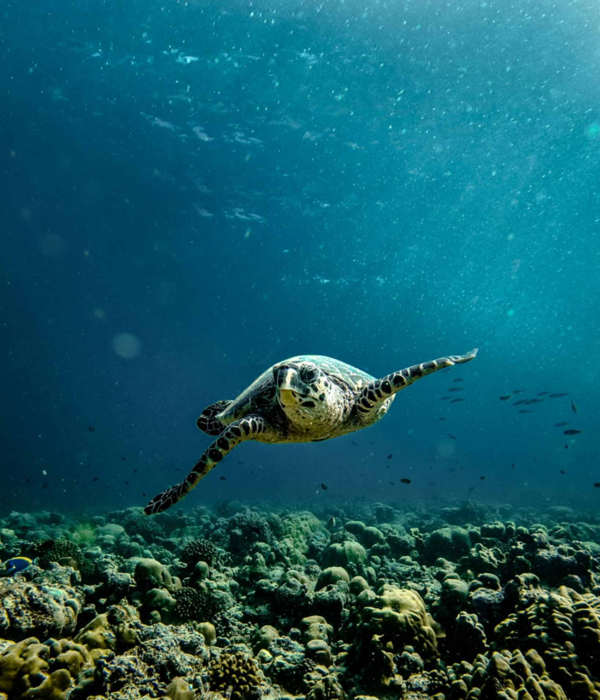
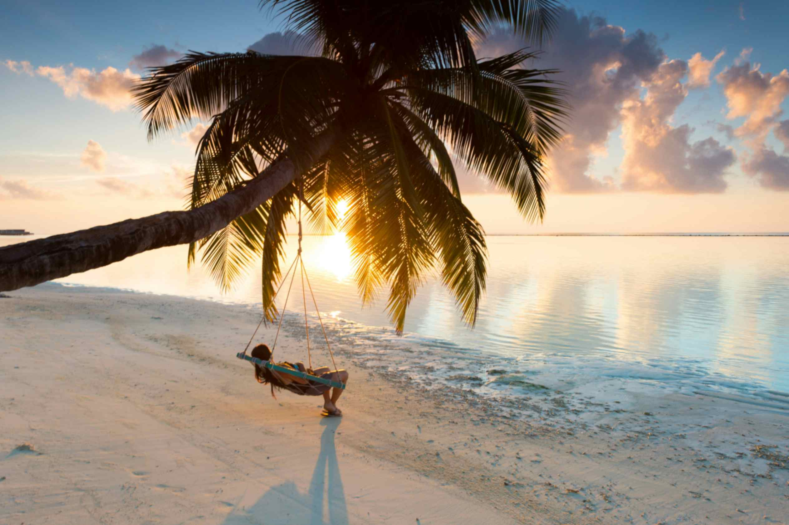

Accommodations

The Maldives offers beautiful overwater bungalows that sit directly above the clear blue ocean.
These rooms often feature private decks, stunning ocean views, and stairs that lead right into the water.
Many also have glass floors, private pools, and luxurious amenities. Guests can relax, swim, and enjoy the
peaceful surroundings while staying in a unique tropical paradise.
Wildlife

The Maldives is home to a wide variety of fascinating wildlife,
especially in its warm, tropical waters. The surrounding ocean is filled with colorful coral reefs,
tropical fish, sea turtles, dolphins, and manta rays. Whale sharks can also be spotted in certain areas,
making the Maldives a popular destination for marine life enthusiasts. On land, visitors may see fruit bats,
seabirds, and lizards. Protecting these animals and their habitats is important to keeping the Maldives
beautiful and preserving its unique ecosystem for future generations.
Activities

The Maldives offers many fun and relaxing activities for visitors to enjoy.
People can relax on beautiful white sandy beaches, sunbathe, or unwind
in the peaceful tropical surroundings. Boat rides are a popular activity, allowing
visitors to explore the crystal-clear ocean, visit nearby islands, and watch dolphins
swimming in the water. Snorkeling is another exciting experience, where visitors can discover
colorful coral reefs and see tropical fish, sea turtles, and other marine life.
Whether enjoying a peaceful day on the beach or exploring the ocean, the Maldives is the perfect
destination for both relaxation and adventure.